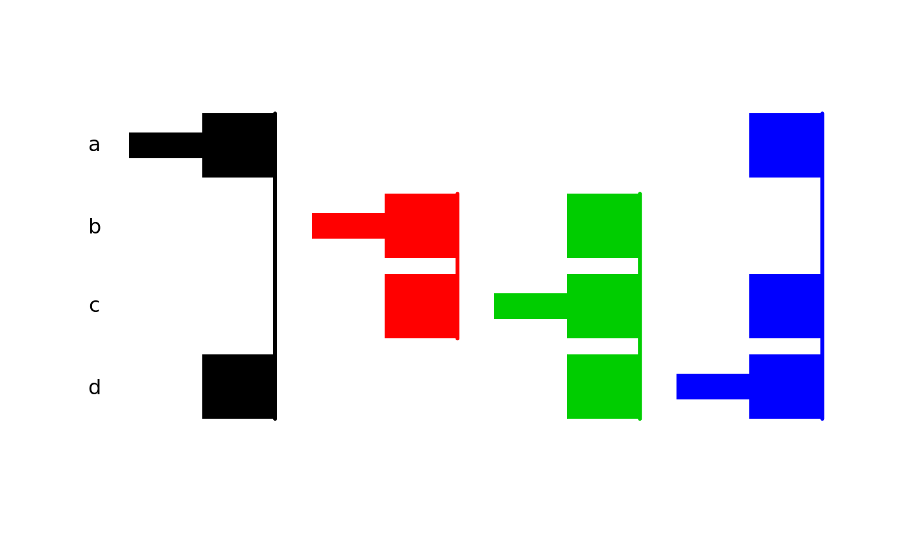
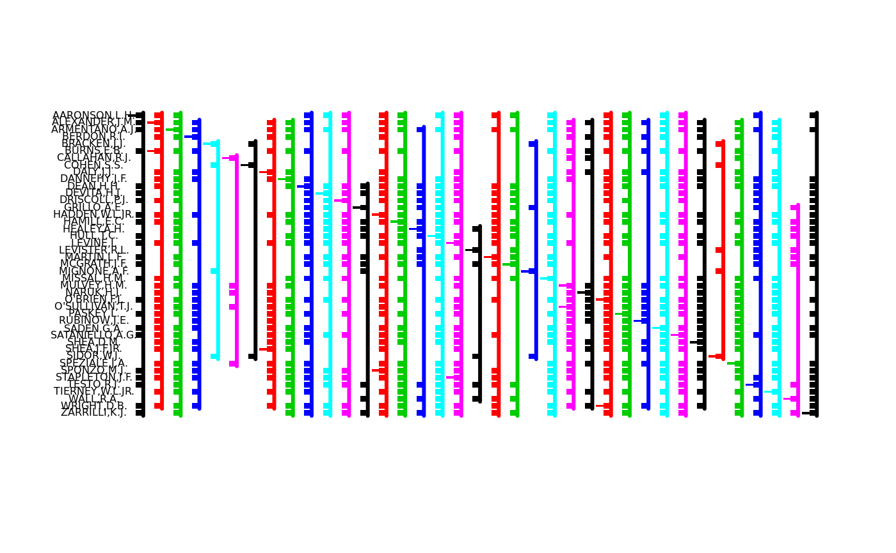
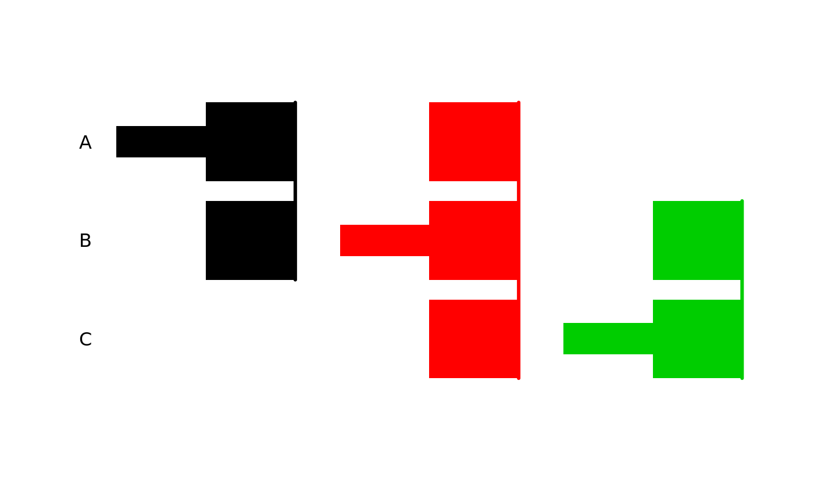
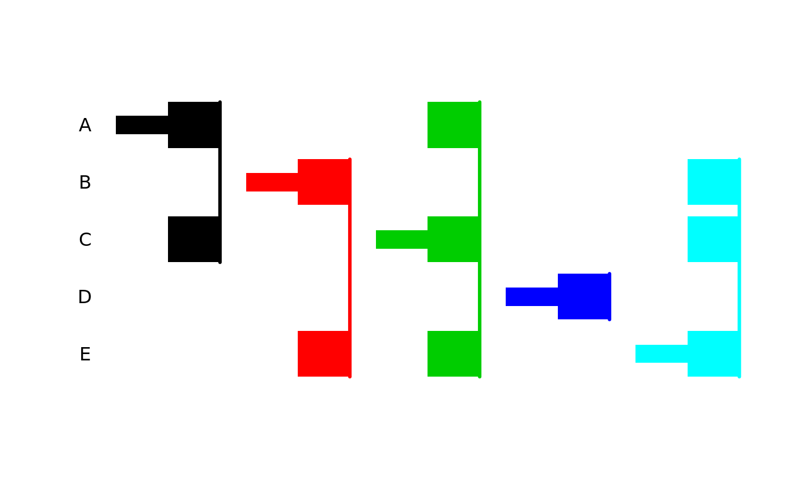

multcompTs.RdConvert a logical vector or a vector of p-values or a correlation or distance matrix into a matrix with an associated visual display to show whether the differences between items exceed a threshold. Designed for use with the output of functions like TukeyHSD, diststats, simint, simtest, csimint, csimtestmultcomp, friedmanmc, kruskalmcpgirmess.
multcompTs(x, compare = "<", threshold = 0.05, sep = ".")
| x | One of the following: (1) A square, symmetric matrix with row names. (2) A vector with hyphenated names, which identify individual items or factor levels after "strsplit(..., '-')". (3) An object of class "dist". If x (or x[1]) is not already of class "logical", it is replaced with do.call(compare, list(x, threshold)), which by default converts numbers (typically p-values) less than 0.05 to TRUE and everything else to FALSE. If x is a matrix, its diagonal must be or must convert to FALSE. |
|---|---|
| compare | function or binary operator; not used if class(x) is "logical". |
| threshold | Second (reference) argument to "compare". |
| sep | Concatonation character for names of objects with identical similarity / dissimilarity patterns. The output of multcompTs is matrix for which the number of rows = (number of columns + number of uses of the "sep" character). |
An object of class "multcompTs", which is a matrix of values -1, 0, 1, with one row for each level compared and one column for each "T", read as follows: 1 = base of the "T" represented by that column, 0 = level(s) not significantly different, and (-1) = leves(s) significantly different. If two or more levels have the same pattern of significant and insignificant differences, they are combined into a single column that can be represented by a "T" with multiple bases. The column name will be a character string concatonating all row names with "1" in that column separated by the "sep" character. Thus, the matrix should have as many 1's as it has rows. Also, the lower triangular portion should have as many "-1's" as there are "TRUE" (e.g., significant) differences among the comparisons.
Produces a matrix of class "multcompTs", describing the "undifferentiated classes" that identify the other factor levels or items that are not distinct or not significantly different from the "base" of the "T"; if two or more levels have the same pattern of significant differences, the two are combined into one "T" with two "bases". The resulting T's are similar to the "undifferentiated classes" discussed by Donaghue (2004).
John R. Donaghue (2004) "Implementing Shaffer's multiple comparison procedure for a large number of groups", pp. 1-23 in Benjamini, Bretz and Sarkar (eds) Recent Developments in Multiple Comparison Procedures (Institute of Mathematical Statistics Lecture Notes-Monograph Series vol. 47)
Spencer Graves and Hans-Peter Piepho (2006) "Simple Visualizations of Paired
Comparisons", vignette("VisualizingPairedComparisons", package = "multcompView")
multcompBoxplot multcompLetters
plot.multcompTs vec2mat dist
## ## 0. Conference presentation comparing Ts and Letters ## dir(system.file('doc', package='multcompView'), pattern='\\.pdf$', full.name=TRUE)#> character(0)## ## 1. logical vector indicating different pairs ## dif3 <- c(FALSE, FALSE, TRUE) names(dif3) <- c("a-b", "a-c", "b-c") multcompTs(dif3)#> a b c #> a 1 0 0 #> b 0 1 -1 #> c 0 -1 1 #> attr(,"class") #> [1] "multcompTs"## ## 2. numeric vector indicating statistical significance ## dif4 <- c(.01, .02, .03, 1) names(dif4) <- c("a-b", "a-c", "b-d", "a-d") (diff4.T <- multcompTs(dif4))#> a b c d #> a 1 -1 -1 0 #> b -1 1 0 -1 #> c -1 0 1 0 #> d 0 -1 0 1 #> attr(,"class") #> [1] "multcompTs"plot(diff4.T)#> $at #> bottom center top #> a 3.6 4 4.4 #> b 2.6 3 3.4 #> c 1.6 2 2.4 #> d 0.6 1 1.4 #> #> $width #> bottom center top #> a 0.6 1 1.4 #> b 1.6 2 2.4 #> c 2.6 3 3.4 #> d 3.6 4 4.4 #>## ## 3. Distance matrix ## dJudge <- dist(USJudgeRatings) dJt <- multcompTs(dJudge, compare='>', threshold = median(dJudge)) # comparison of 43 judges; compact but undecipherable: plot(dJt, cex.axis=.5)#> $at #> bottom center top #> AARONSON,L.H. 42.6 43 43.4 #> ALEXANDER,J.M. 41.6 42 42.4 #> ARMENTANO,A.J. 40.6 41 41.4 #> BERDON,R.I. 39.6 40 40.4 #> BRACKEN,J.J. 38.6 39 39.4 #> BURNS,E.B. 37.6 38 38.4 #> CALLAHAN,R.J. 36.6 37 37.4 #> COHEN,S.S. 35.6 36 36.4 #> DALY,J.J. 34.6 35 35.4 #> DANNEHY,J.F. 33.6 34 34.4 #> DEAN,H.H. 32.6 33 33.4 #> DEVITA,H.J. 31.6 32 32.4 #> DRISCOLL,P.J. 30.6 31 31.4 #> GRILLO,A.E. 29.6 30 30.4 #> HADDEN,W.L.JR. 28.6 29 29.4 #> HAMILL,E.C. 27.6 28 28.4 #> HEALEY.A.H. 26.6 27 27.4 #> HULL,T.C. 25.6 26 26.4 #> LEVINE,I. 24.6 25 25.4 #> LEVISTER,R.L. 23.6 24 24.4 #> MARTIN,L.F. 22.6 23 23.4 #> MCGRATH,J.F. 21.6 22 22.4 #> MIGNONE,A.F. 20.6 21 21.4 #> MISSAL,H.M. 19.6 20 20.4 #> MULVEY,H.M. 18.6 19 19.4 #> NARUK,H.J. 17.6 18 18.4 #> O'BRIEN,F.J. 16.6 17 17.4 #> O'SULLIVAN,T.J. 15.6 16 16.4 #> PASKEY,L. 14.6 15 15.4 #> RUBINOW,J.E. 13.6 14 14.4 #> SADEN.G.A. 12.6 13 13.4 #> SATANIELLO,A.G. 11.6 12 12.4 #> SHEA,D.M. 10.6 11 11.4 #> SHEA,J.F.JR. 9.6 10 10.4 #> SIDOR,W.J. 8.6 9 9.4 #> SPEZIALE,J.A. 7.6 8 8.4 #> SPONZO,M.J. 6.6 7 7.4 #> STAPLETON,J.F. 5.6 6 6.4 #> TESTO,R.J. 4.6 5 5.4 #> TIERNEY,W.L.JR. 3.6 4 4.4 #> WALL,R.A. 2.6 3 3.4 #> WRIGHT,D.B. 1.6 2 2.4 #> ZARRILLI,K.J. 0.6 1 1.4 #> #> $width #> bottom center top #> AARONSON,L.H. 0.6 1 1.4 #> ALEXANDER,J.M..BURNS,E.B. 1.6 2 2.4 #> ARMENTANO,A.J. 2.6 3 3.4 #> BERDON,R.I. 3.6 4 4.4 #> BRACKEN,J.J. 4.6 5 5.4 #> CALLAHAN,R.J. 5.6 6 6.4 #> COHEN,S.S. 6.6 7 7.4 #> DALY,J.J..SHEA,J.F.JR. 7.6 8 8.4 #> DANNEHY,J.F. 8.6 9 9.4 #> DEAN,H.H. 9.6 10 10.4 #> DEVITA,H.J. 10.6 11 11.4 #> DRISCOLL,P.J. 11.6 12 12.4 #> GRILLO,A.E. 12.6 13 13.4 #> HADDEN,W.L.JR..SPONZO,M.J. 13.6 14 14.4 #> HAMILL,E.C. 14.6 15 15.4 #> HEALEY.A.H. 15.6 16 16.4 #> HULL,T.C. 16.6 17 17.4 #> LEVINE,I..STAPLETON,J.F. 17.6 18 18.4 #> LEVISTER,R.L. 18.6 19 19.4 #> MARTIN,L.F. 19.6 20 20.4 #> MCGRATH,J.F. 20.6 21 21.4 #> MIGNONE,A.F. 21.6 22 22.4 #> MISSAL,H.M. 22.6 23 23.4 #> MULVEY,H.M..O'SULLIVAN,T.J. 23.6 24 24.4 #> NARUK,H.J. 24.6 25 25.4 #> O'BRIEN,F.J..WRIGHT,D.B. 25.6 26 26.4 #> PASKEY,L. 26.6 27 27.4 #> RUBINOW,J.E. 27.6 28 28.4 #> SADEN.G.A. 28.6 29 29.4 #> SATANIELLO,A.G. 29.6 30 30.4 #> SHEA,D.M. 30.6 31 31.4 #> SIDOR,W.J. 31.6 32 32.4 #> SPEZIALE,J.A. 32.6 33 33.4 #> TESTO,R.J. 33.6 34 34.4 #> TIERNEY,W.L.JR. 34.6 35 35.4 #> WALL,R.A. 35.6 36 36.4 #> ZARRILLI,K.J. 36.6 37 37.4 #>x <- array(1:9, dim=c(3,3), dimnames=list(LETTERS[1:3], NULL) ) d3 <- dist(x) dxTs <- multcompTs(d3, compare=">", threshold=2) plot(dxTs)#> $at #> bottom center top #> A 2.6 3 3.4 #> B 1.6 2 2.4 #> C 0.6 1 1.4 #> #> $width #> bottom center top #> A 0.6 1 1.4 #> B 1.6 2 2.4 #> C 2.6 3 3.4 #>d3d <- dist(x, diag=TRUE) dxdTs <- multcompTs(d3d, compare=">", threshold=2) stopifnot( all.equal(dxTs, dxdTs) ) d3u <- dist(x, upper=TRUE) dxuTs <- multcompTs(d3d, compare=">", threshold=2) stopifnot( all.equal(dxTs, dxuTs) ) ## ## 4. cor matrix ## set.seed(4) x100 <- matrix(rnorm(100), ncol=5, dimnames=list(NULL, LETTERS[1:5]) ) cx <- cor(x100) cxTs <- multcompTs(abs(cx), threshold=.3) plot(cxTs)#> $at #> bottom center top #> A 4.6 5 5.4 #> B 3.6 4 4.4 #> C 2.6 3 3.4 #> D 1.6 2 2.4 #> E 0.6 1 1.4 #> #> $width #> bottom center top #> A 0.6 1 1.4 #> B 1.6 2 2.4 #> C 2.6 3 3.4 #> D 3.6 4 4.4 #> E 4.6 5 5.4 #>